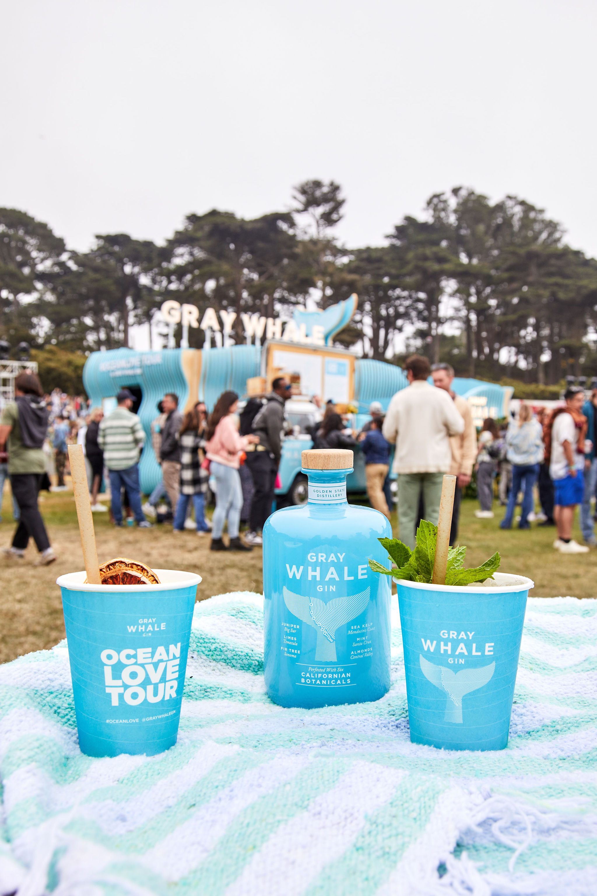
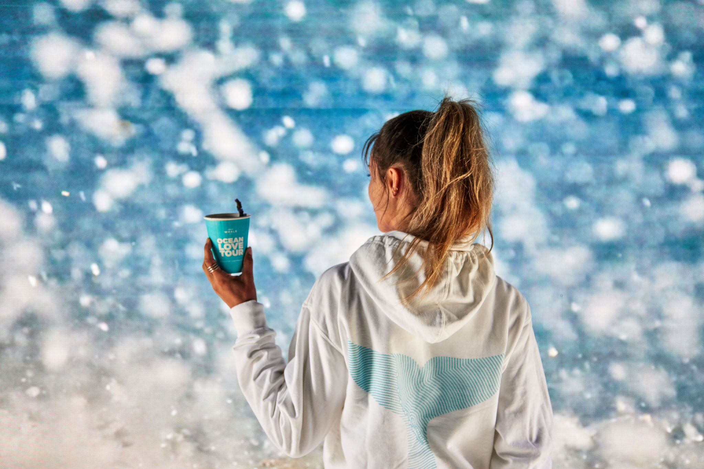
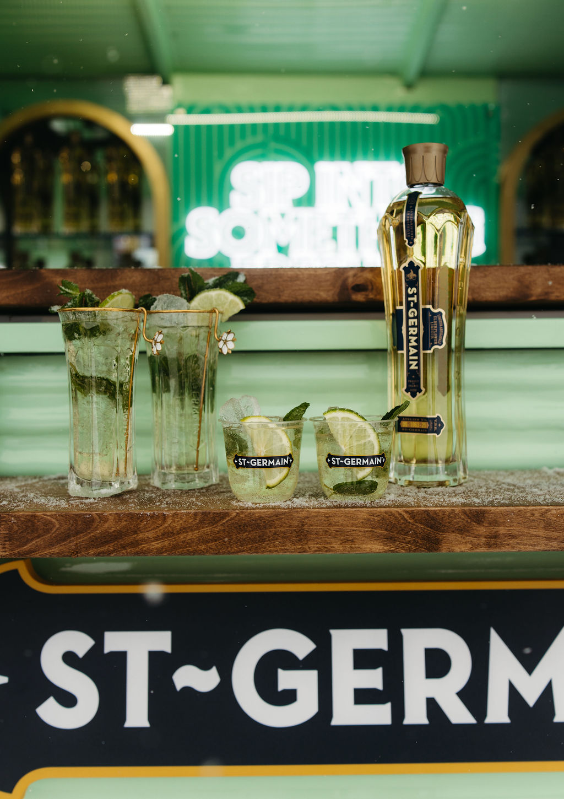
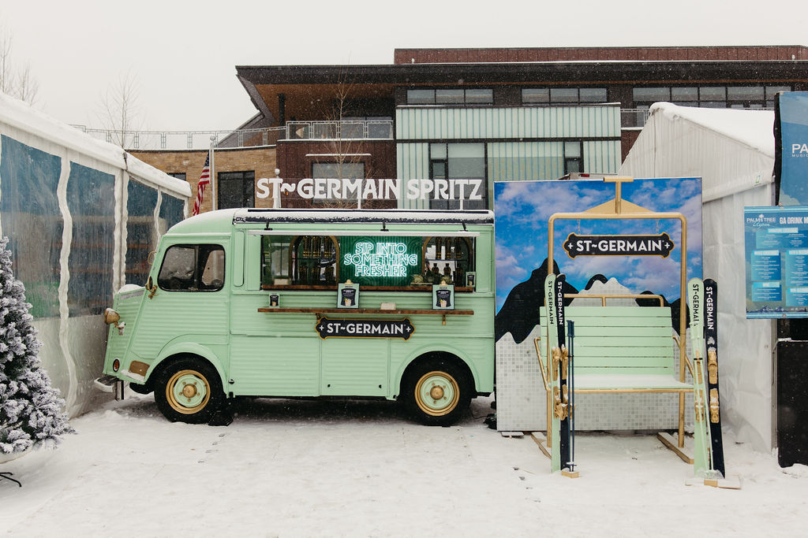
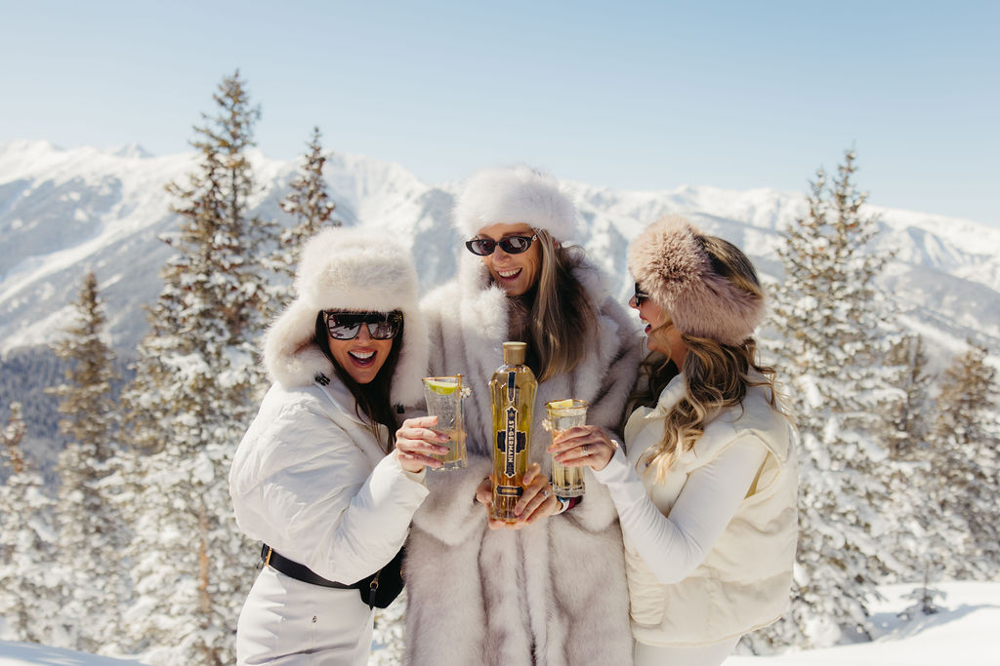
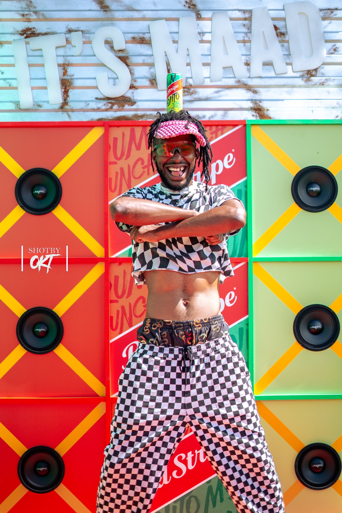
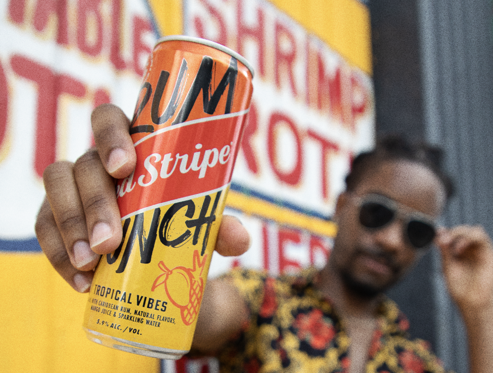
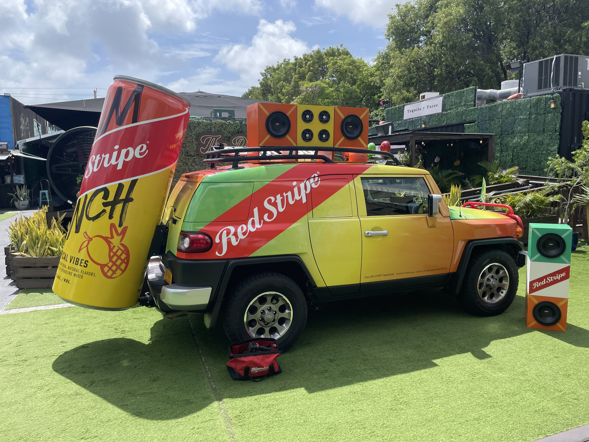

Results:
3 Years | 13 Festivals Activated | 78.5k+ Cocktails Sold
Partners:
Outside Lands (2022–2024) | BeachLife Music Festival (2022–2024) | Beach Road Weekend (2022–2023) | Jazz Aspen Snowmass (2023–2024) | Ohana Festival (2023–2024) | Gov Ball (2022)
Key Question: As a small-batch, California-born gin brand rooted in sustainability and coastal lifestyle, how does Gray Whale gain market share in a white spirit category dominated by vodka and tequila brands?
Execution: We put the brand at the center of playful moments of togetherness by building a music festival tour from the ground up, prioritizing multi-year deals with partners that fit the brand ethos in order to develop year over year equity with consumers. We designed and produced a high-impact build, complemented by a creative cocktail strategy crafted to lower the barrier to trial.
Role:
- Led end-to-end campaign management across festival strategy, partnership development and fulfillment, and event execution
- Promoted to Manager from Associate after the first year of the program



Results:
13.1k+ St~Germain Spritz Served
Partners:
Eleven212 | Palm Tree Festival Aspen | South Beach Wine & Food Festival
Key Question: How does St~Germain make the Hugo Spritz own-able to the brand and compete with Aperol to become the year-round spritz for happy hour moments?
Execution: As the brand's first official venture into experiential marketing, we built a winter experiential program centered around the St~Germain Spritz, targeting the Après occasion and tentpole winter events where the expressionist consumer is most present in order to drive fame. We created a season-long partnership with Aspen's newest mountain-top account for ongoing exposure, partnered with an influencer-heavy music festival to reposition the cocktail for the high-energy music festival landscape, and sponsored one of Miami's marquee lifestyle events to reinforce the cocktail as a warm weather staple.
Role:
- Lead development of the experiential assets, partnership strategy, and activation execution



Results:
2 Summers | 665+ cases distributed through events | 72+ accounts visited through sampling tours
Partners:
Miami Carnival | Reggae Rise Up | The Do-Over | Beach Road Trip Weekend
Key Question: How does Red Stripe introduce their iconic brand to a new generation of consumers and reconnect with their Jamaican roots through a rum RTD?
Execution: We built a grassroots activation strategy to prove the brand can show up authentically in high-energy, culture-forward spaces. The activation concept brought the vibrant energy, while the partnership strategy featured a mix of tentpole Caribbean cultural festivals and an event series with The Do-Over party collective to drive credibility with tastemakers from a multicultural audience. We simultaneously collaborated with local sales' teams to execute summer sampling tours using branded vehicles to directly connect consumer trial to priority accounts.
Role:
- Led partnership strategy, activation concept development, activation execution, and local market coordination across launch markets